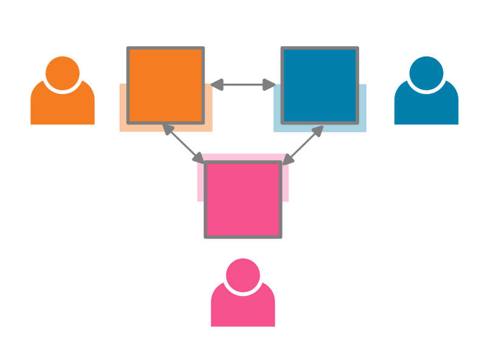

Exchange content#
TeSS can import content from a range of external sources. When the source is also based on TeSS, there are additional features which allow you to customise and automate the exchange, thanks to the mTeSS-X project.
{kind=link}

You may take the following steps to setup automated exchange between two TeSS based catalogues (a source and a destination):
Ensure that you have the correct permissions. To set up the exchange of materials, you need to be a site admin, or the owner of a ‘content provider’, of the destination TeSSHub (where the content should end up). You are the owner of content providers that you create.
Go to the source TeSSHub instance (where the training should come from) and understand what metadata (set of filters) is used there to describe the particular set of training content that should be exchanged.
In the source instance, at the top of the list of training materials, go to the ‘Subscribe’ menu, click ‘Harvest using OAI-PMH’, and copy the OAI-PMH link.
Go to the content provider in the target TeSSHub instance (where the exchanged content should be associated with), open the ‘Sources’ tab then click the ‘Add source’ button.
Enter the URL that you copied in step 3 into the URL field and select ‘OAI-PMH’ as the ingestion method.
If you are ready for the materials to be automatically exchanged, check the ‘Enabled’ checkbox; otherwise, if you just want to create the source as a draft, don’t check this checkbox. If you are an administrator, you may also directly set the new source as ‘Approved’ to enable it. Everyone else will need to wait until an administrator approves the source before content starts to be exchanged.
You may add filter conditions to not exchange the whole content of the source TeSSHub. Only content that satisfies all the conditions in the ‘Allow’ list and none of the conditions in the ‘Block’ list is exchanged. For more complex cases where either one set of conditions or another set of conditions but not necessarily all the conditions should be satisfied for exchange, feel free to create multiple sources for each set of conditions.
Save the source using the ‘Register Source’ button.
After the source is enabled and approved, you may expect content to be exchanged and kept up to date once per day, but this may depend on the configuration of the target TeSSHub instance.
The whole process is also shown in this video. In this example, training material on Python that is not for beginners is exchanged from ELIXIR TeSS to PaN-Training: Please note that the video may be slightly outdated in some cases. The instructions above may be more up to date.